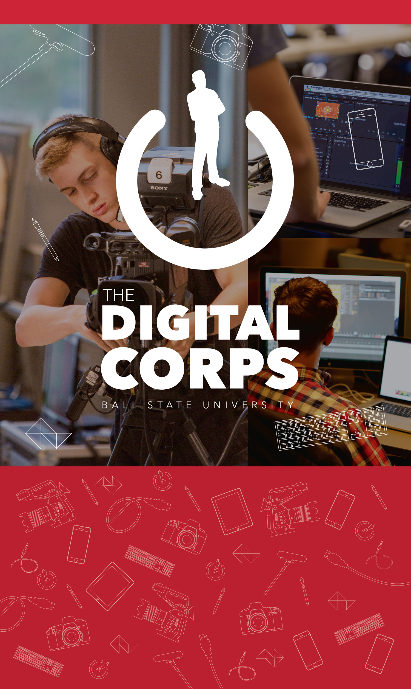
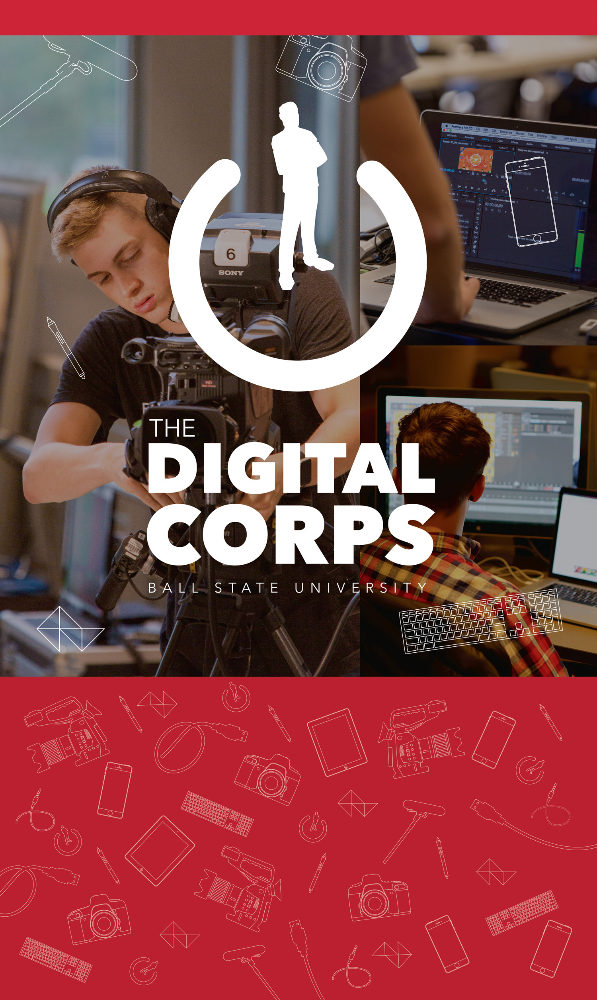

Ball State University
Identity & Print | design
My work for Ball State exists in two separate worlds: one world is The Digital Corps, a student staffed design and development studio for which I created and maintain all branding, and the other is the various print and promotional pieces I have created for Ball State’s marketing department.
 
